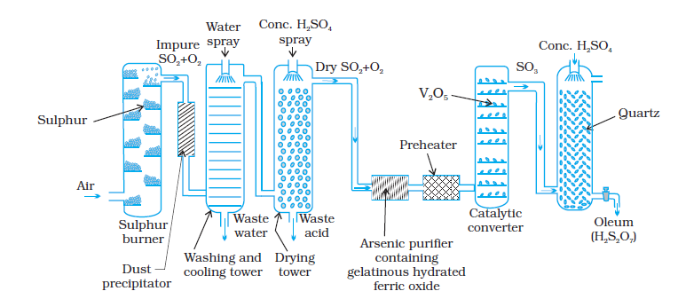

= very large (
= very large ( >10)
>10)7.17 Sulphuric Acid
Manufacture
Sulphuric acid is one of the most important industrial chemicals worldwide.
Sulphuric acid is manufactured by the Contact Process which involves three steps:
(i) burning of sulphur or sulphide ores in air to generate SO2.
(ii) conversion of SO2 to SO3 by the reaction with oxygen in the presence of a catalyst (V2O5), and
(iii) absorption of SO3 in H2SO4 to give Oleum (H2s2O7).
A flow diagram for the manufacture of sulphuric acid is shown in (Fig. 7.7). The SO2 produced is purified by removing dust and other impurities such as arsenic compounds.
The key step in the manufacture of H2SO4 is the catalytic oxidation of SO2 with O2 to give SO3 in the presence of V2O5 (catalyst).
The reaction is exothermic, reversible and the forward reaction leads to a decrease in volume. Therefore, low temperature and high pressure are the favourable conditions for maximum yield. But the temperature should not be very low otherwise rate of reaction will become slow.
In practice, the plant is operated at a pressure of 2 bar and a temperature of 720 K. The SO3 gas from the catalytic converter is absorbed in concentrated H2SO4 to produce oleum. Dilution of oleum with water gives H2SO4 of the desired concentration. In the industry two steps are carried out simultaneously to make the process a continuous one and also to reduce the cost.
SO3 + H2SO4 → H2s2O7
(Oleum)
The sulphuric acid obtained by Contact process is 96-98% pure.

Fig. 7.7: Flow diagram for the manufacture of sulphuric acid
Properties
Sulphuric acid is a colourless, dense, oily liquid with a specific gravity of 1.84 at 298 K. The acid freezes at 283 K and boils at 611 K. It dissolves in water with the evolution of a large quantity of heat. Hence, care must be taken while preparing sulphuric acid solution from concentrated sulphuric acid. The concentrated acid must be added slowly into water with constant stirring.
The chemical reactions of sulphuric acid are as a result of the following characteristics: (a) low volatility (b) strong acidic character (c) strong affinity for water and (d) ability to act as an oxidising agent. In aqueous solution, sulphuric acid ionises in two steps.
H2SO4(aq) + H2O(l) → H3O+(aq) + HSO4–(aq); = very large (>10)
HSO4–(aq) + H2O(l) → H3O+(aq) + SO42-(aq) ; = 1.2 × 10–2
The larger value of  (
( >10) means that H2SO4 is largely dissociated into H+ and HSO4–. Greater the value of dissociation constant (Ka), the stronger is the acid.
>10) means that H2SO4 is largely dissociated into H+ and HSO4–. Greater the value of dissociation constant (Ka), the stronger is the acid.
The acid forms two series of salts: normal sulphates (such as sodium sulphate and copper sulphate) and acid sulphates (e.g., sodium hydrogen sulphate).
Sulphuric acid, because of its low volatility can be used to manufacture more volatile acids from their corresponding salts.
2 MX + H2SO4 → 2 HX + M2SO4 (X = F, Cl, NO3)
(M = Metal)
Concentrated sulphuric acid is a strong dehydrating agent. Many wet gases can be dried by passing them through sulphuric acid, provided the gases do not react with the acid. Sulphuric acid removes water from organic compounds; it is evident by its charring action on carbohydrates.
C12H22O11 12C + 11H2O
Hot concentrated sulphuric acid is a moderately strong oxidising agent. In this respect, it is intermediate between phosphoric and nitric acids. Both metals and non-metals are oxidised by concentrated sulphuric acid, which is reduced to SO2.
Cu + 2 H2SO4(conc.) → CuSO4 + SO2 + 2H2O
3S + 2H2SO4(conc.) → 3SO2 + 2H2O
C + 2H2SO4(conc.) → CO2 + 2 SO2 + 2 H2O
Uses: Sulphuric acid is a very important industrial chemical. A nation's industrial strength can be judged by the quantity of sulphuric acid it produces and consumes. It is needed for the manufacture of hundreds of other compounds and also in many industrial processes. The bulk of sulphuric acid produced is used in the manufacture of fertilisers (e.g., ammonium sulphate, superphosphate). Other uses are in: (a) petroleum refining (b) manufacture of pigments, paints and dyestuff intermediates (c) detergent industry (d) metallurgical applications (e.g., cleansing metals before enameling, electroplating and galvanising (e) storage batteries (f) in the manufacture of nitrocellulose products and (g) as a laboratory reagent.